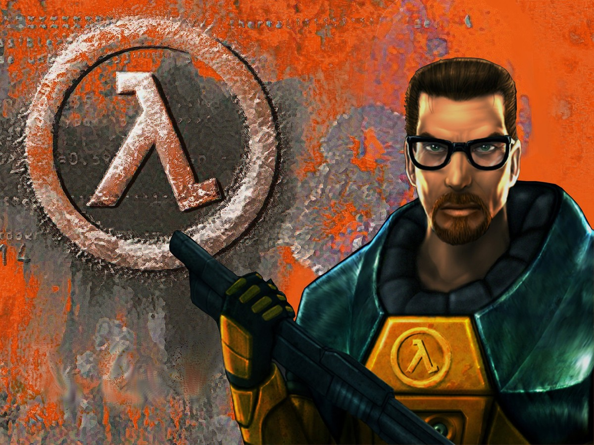

Curiosidades
- JohCar é o usuário com a maior quantidade de jogos da steam, com 5445 jogos na conta conseguidos durante 11 anos.
- O usuário Palm Desert possui a conta com o maior level da Steam, atualmente a sua conta esta no nível 1058.
- O homem careca com uma válvula na logo é um mistério. Ninguem sabe quem é o homem na logo. A foto original foi feito por uma agência de publicidade, que saiu fotografando tudo o que via pela frente nas ruas de Seattle. O mesmo foi feito para a logo antiga, com a válvula saindo do olho de um homem.

- O pico de usuarios online na steam foi de 8,836,171.
- Steam passou 125 milhões de usuários ativos em 2015. São mais de 4,5 mil games e 400 milhões de conteúdos gerados por usuários.
- Em 2002, quando a Steam nasceu como um sistema de distribuição de conteúdo, ele só enviava patches e atualizações.
- Em 2000, Mike Harrington deixou a Valve após sentir que cumpriu seu objetivo com Half-Life. Ele tirou férias prolongadas com a sua mulher, os dois construíram o próprio barco e até hoje fazem viagens ao redor do mundo. Harrington cofundou as empresas Picnik e Catnip Labs cinco anos depois.
- O primeiro sucesso da empresa foi Half-Life, que levou dois anos para ser concluido. Fazer um jogo de tiro futurista em primeira pessoa sempre esteve na cabeça da empresa, que comprou a engine Quake, da id Software.

- Com base no kit de desenvolvimento do Half-Life, os fãs Minh Le e Jess Cliffe fizeram o jogo Counter-Strike com base em multiplayer, que era muito bom pra época. A Valve comprou Counter-Strike e contratou os criadores do mesmo.
- Em 2004, após uma produção difícil, saiu Half-Life 2. O jogo se saiu muito bem e recebeu muitos premios. No mesmo ano, nasceu a engine Source. Em 2015, o motor gráfico teve sua segunda versão liberada e há evidencias de que a terceira já é testada aos poucos em alguns games.
O site oficial da Steam pode ser acessado clicando aqui. Lá você poderá aproveitar o grande acervo de jogos e programas, além das outras qualidades descritas no nosso site.
Volte ao Topo